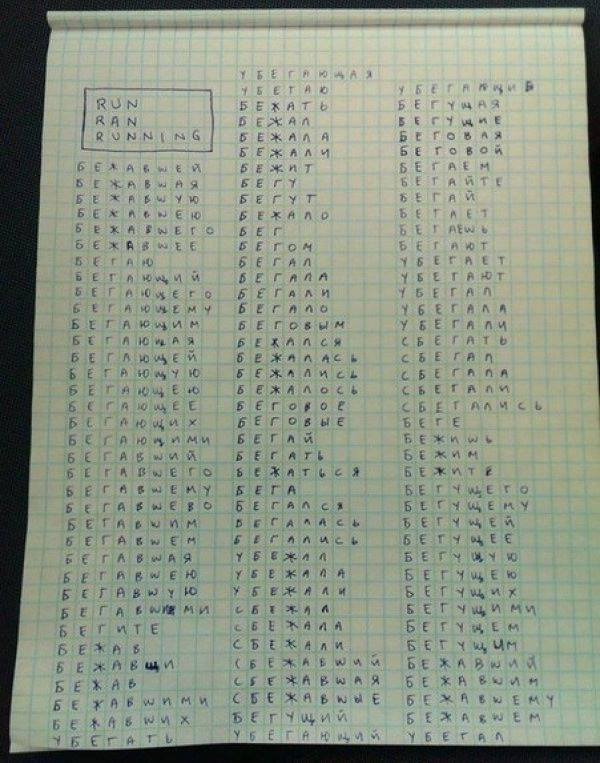

Русская грамматика и английская грамматика — кто круче?
В интернете уже много лет гуляет картинка.

А вот как на самом деле обстоят дела:
В сети популярна картинка: слева три английские формы — run / ran / running, справа больше сотни русских «форм» глагола бежать. Вывод подаётся как очевидный: русский несравнимо богаче.
Но картинка сравнивает несравнимое. С английской стороны взяты три формы, с русской — всё подряд и по разным основаниям сразу: личные формы (бегу, бежишь), причастия и деепричастия во всех падежах и родах (бегущий, бегущего, бегущими…), отдельные приставочные глаголы (убежать, выбежать), другие части речи (бег, беговой) и просто повторы с ошибками. Стоит применить те же приёмы к run — сосчитать все его времена, фразовые глаголы и производные, — и английский список тоже вырастет до сотен.
Главная же подмена в том, что «богатство» измеряют длиной списка форм одного слова. Но язык силён не числом форм, а тем, сколько разных смыслов он умеет выразить и насколько точно. Поэтому честнее сравнивать не столбики словоформ, а смыслы: взять один глагол движения в каждом языке и посмотреть, как оба справляются с одним и тем же набором значений — где одним словом, где идиомой, где вообще никак. Именно это делает таблица ниже.
«Бежать» и run: сопоставление по смыслам
Каждая строка — один смысл, а рядом то, как его выражают русский корень бег-/беж- и английский run. Прочерк (—) значит, что у языка нет своего слова под этот смысл — только описание или калька. Столбец «дробление» показывает, где одно слово одного языка соответствует нескольким словам другого; объединённые ячейки — это одно слово, накрывающее несколько смыслов.
смысл выражен другим корнем — своего слова нет дробление: 1 слово → несколько в другом языке
Таблица
| № | Русский (бег-) | English (run) | Значение | Дробление |
|---|---|---|---|---|
| 1 | бежать | run | двигаться бегом | 2 → 1 рус. дробит |
| 2 | бегать | двигаться бегом (ненаправленно) | ||
| 3 | бежать | to run | инфинитив с частицей to | |
| 4 | бежит | runs | бежит (наст.) | |
| 5 | бежал | ran | бежал (прош.) | |
| 6 | будет бежать | will run | будет бежать (буд.) | |
| 7 | бегущий | running | бегущий (прич.) | |
| 8 | пробежав | having run | пробежав (perfect part.) | |
| 9 | беги! | run! | беги! (императив 2 л.) | |
| 10 | побежим | let's run | побежим (императив 1 л. мн.) | |
| 11 | бежал бы | would run | бежал бы (условное) | |
| 12 | пробежал | have run | уже пробежал (perfect) | |
| 13 | — | have been running | бежит уже некоторое время | |
| 14 | вбежать | run in | вбежать (внутрь) | |
| 15 | выбежать | run out | выбежать (наружу) | |
| 16 | убежать | run away | убежать (прочь) | |
| 17 | сбежать | run off | сбежать (скрыться) | |
| 18 | взбежать | run up | взбежать (наверх) | |
| 19 | раскритиковать | run down | раскритиковать / сбить | |
| 20 | обежать | run around | обежать (кругом) | |
| 21 | опережать | run ahead | опережать | |
| 22 | подбежать | run up to | подбежать (приблизиться) | |
| 23 | прибежать | come running | прибежать (прибыть) | |
| 24 | забежать | drop by | заскочить ненадолго | |
| 25 | разбежаться | scatter | рассеяться в стороны | |
| 26 | набежать | accumulate | накопиться (о сумме) | |
| 27 | избежать | avoid | уклониться от (перен.) | |
| 28 | беженец | refugee | беженец | |
| 29 | перебежчик | defector | перебежчик | |
| 30 | побег | escape | побег (бегство) | |
| 31 | забег | race | забег (соревнование) | |
| 32 | бега | the races | бега (скачки) | |
| 33 | беготня | bustle | беготня, суета | |
| 34 | бегун | runner | бегун | |
| 35 | беговой | running (adj.) | беговой (относящийся к бегу) | |
| 36 | беглец | runaway | беглец | |
| 37 | натолкнуться | run into | случайно встретить | |
| 38 | закончиться | run out of | исчерпать запас | |
| 39 | идти на выборы | run for office | баллотироваться | |
| 40 | управлять | run a business | управлять делом | |
| 41 | температурить | run a fever | температурить | |
| 42 | выдохнуться | run out of steam | выдохнуться | |
| 43 | рисковать | run the risk | рисковать | |
| 44 | распоясаться | run wild | выйти из-под контроля | |
| 45 | опаздывать | run late | опаздывать | |
| 46 | иссякнуть | run dry | иссякнуть | |
| 47 | быть глубоким | run deep | быть глубоким (о чувствах) | |
| 48 | накаляться | run high | накаляться (об эмоциях) | |
| 49 | заправлять | run the show | всем заправлять | |
| 50 | переигрывать | run circles around | значительно превосходить | |
| 51 | идти своим чередом | run its course | идти своим чередом | |
| 52 | быть в роду | run in the family | быть семейной чертой | |
| 53 | работать как часы | run like clockwork | работать как часы | |
| 54 | буйствовать | run amok | буйствовать | |
| 55 | задавить | run over | переехать (задавить) | 2 → 1 рус. дробит |
| 56 | просмотреть | быстро просмотреть | ||
| 57 | преследовать | run after | преследовать | |
| 58 | прогнать | run through | прорепетировать | |
| 59 | работать на | run on | работать на (топливе) | |
| 60 | обсудить | run by | обсудить / согласовать | |
| 61 | захватить | overrun | переполнить / захватить | |
| 62 | обогнать | outrun | обогнать бегом | |
| 63 | повтор | rerun | повтор показа | |
| 64 | полоса | runway | взлётно-посадочная полоса | |
| 65 | проточная вода | running water | проточная вода | |
| 66 | время выполнения | runtime | время выполнения (прогр.) | |
| 67 | в перспективе | in the long run | в долгосрочной перспективе | |
| 68 | сток | runoff | второй тур / сток | |
| 69 | стычка | run-in | стычка, конфликт | |
| 70 | прогон | dry run | пробный прогон | |
| 71 | второе место | runner-up | занявший второе место | |
| 72 | фаворит | front-runner | фаворит гонки | |
| 73 | напарник | running mate | напарник по предвыборному списку | |
| 74 | — | home run | хоум-ран (бейсбол) | |
| 75 | — | runway model | модель на подиуме | |
| 76 | перебежать | run across | перебежать (через) | 2 → 1 рус. дробит |
| 77 | наткнуться | случайно наткнуться | ||
| 78 | прокрутить | run back | прокрутить назад (запись) | |
| 79 | беглый | fluent | беглый (о речи) | 1 → 5 англ. дробит |
| 80 | cursory | беглый (о взгляде) | ||
| 81 | rapid fire | беглый огонь | ||
| 82 | runaway slave | беглый раб | ||
| 83 | fugitive | беглый преступник | ||
| 84 | — | used to run | бывшая привычка (раньше бегал, теперь нет) | |
| 85 | добегался | — | добегался (доигрался) | |
| 86 | забегаться | — | забегаться (закрутиться) | |
| 87 | набегаться | — | набегаться вдоволь | |
| 88 | побегивать | — | побегивать (время от времени) |
Итог
| Всего значений в сопоставлении | 88 |
| оба языка используют родной корень | 25 |
| русский — другим корнем | 41 |
| английский — другим корнем | 14 |
| у русского нет своего слова (—) | 4 |
| у английского нет своего слова (—) | 4 |
Дробление работает в обе стороны. Русское беглый — одно слово, а английскому нужно пять: fluent, cursory, rapid fire, runaway, fugitive — тут дробит английский. А русская видовая пара бежать / бегать и приставочные различия — там, где английскому хватает одного run, — дробит русский.
Прочерки — в обе стороны. У русского нет своего слова для used to run (бывшая привычка), have been running и home run. У английского — нет одного слова для русских приставочно-видовых оттенков: добегался, забегаться, набегаться, побегивать. Каждый язык где-то богаче, где-то беднее — просто в разных зонах.
Вывод: ни один язык не «богаче» вообще. Русский дробит смыслы в грамматике (вид, приставки), английский — в лексике (отдельные слова, идиомы), и у каждого свои непереводимые одним словом места. «3 против 120» с картинки получалось лишь потому, что дробление и лакуны считали только с одной стороны.